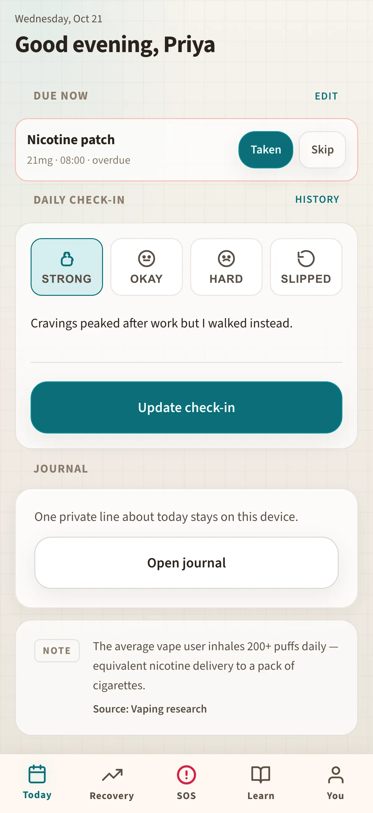

Fictional example Fictional example. People, screenshots, and numbers are made up — not a real customer story.
SteadyCap · Toronto, Canada
How Priya keeps her father’s meds readable
Priya cares for her father between work calls. Phone for quick ticks, tablet for the full schedule at appointments, laptop for export before the next visit — all fictional sample data.
“His pills are in one list now.”

Before and after
Made-up numbers for a fictional week — not a real customer case.
Before
After SteadyCap
A fictional day with Priya
Sample screens for the story — not a recorded real session.
-
Morning ticks
While toast browns, Priya opens the medicine tracker on her iPhone and ticks Dad’s morning pills in the order the clinic printed — large enough to read without glasses.
-
Clinic preview
In the waiting room she flips to the iPad so the nurse can see the full day schedule without flipping through a paper pad full of crossed-out times.
-
Notes after the visit
Back home she journals what the doctor said on her laptop — dose change, next bloodwork date — while it is still fresh, still private on the device.
-
Evening meds
Evening ticks happen on the phone again; she stands at the counter and clears each row before dinner, no scavenger hunt through blister packs.
-
Tomorrow’s plan
Before her brother visits she leaves Tomorrow open on the laptop so he can glance the plan without asking Dad to “remember everything.”
Watch it
A day across devices — silent walkthrough with captions. No autoplay with sound.
Read transcript
Priya ticks meds on iPhone, shows the schedule on iPad at clinic, journals on laptop, and closes the evening on phone. Fictional.
Features Priya uses
Fictional example. People, screenshots, and numbers are made up — not a real customer story.